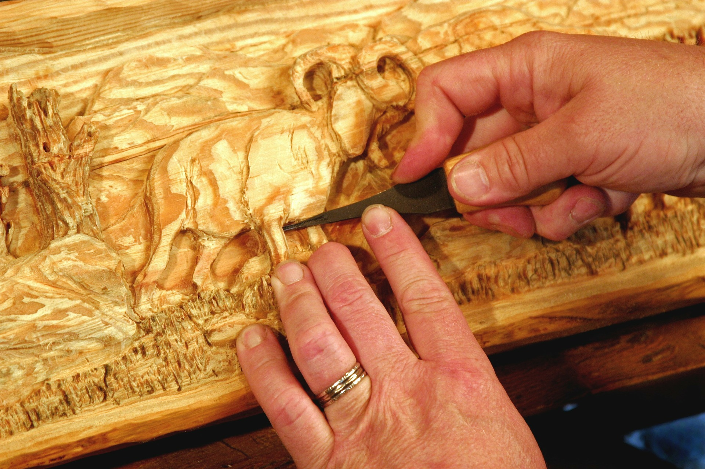

Дърворезба
Дърворезбата е древно изкуство, което е съществувало от хилядолетия. Тя е израз на човешката креативност и умение да се работи с природата. Дървото, със своята красота и топлина, е идеален материал за оформяне на скулптури, декорации и предмети от бита.
Видове дърворезба:
Релефна дърворезба - дървото се издълбава, за да се създадат релефни изображения. Този вид резба е популярен за декорация на мебели, стени, и други предмети.
Скулптурна дърворезба - дървото се оформя в триизмерни фигури. Това е по-сложен вид резба, който изисква високо ниво на умение.
Дърворезба за декорация - дървото се използва за създаване на декоративни предмети, като кутии, рамки, и други предмети от бита.
Инструменти за дърворезба:
Длето - инструмент с остър ръб, който се използва за изрязване на дървото.
Ръчна пила - инструмент със зъби, който се използва за изрязване на дървото.
Шкурка - материал с абразивни частици, който се използва за полиране на дървото.
Съвети за дърворезба:Изберете правилното дърво - твърдите дървета, като дъб и бук, са подходящи за скулптурна резба. Меките дървета, като липа и топола, са подходящи за релефна резба.
Започнете с прости проекти - не се опитвайте да създавате сложни скулптури от началото. Започнете с прости проекти, за да се научите на основите на дърворезбата.
Бъдете търпеливи - дърворезбата изисква време и търпение. Не се отказвайте, ако не получите перфектния резултат от първия опит.
Вдъхновение:Посетете галерии и музеи - разгледайте произведения на
изкуството от дърворезба, за да получите вдъхновение.
Прочетете книги и списания - изучавайте техники и стилове на дърворезба.
Включете се в онлайн общности - общувайте с други дърворезбари, за да споделите опит и вдъхновение.